Slack Architecture
Slack System Design
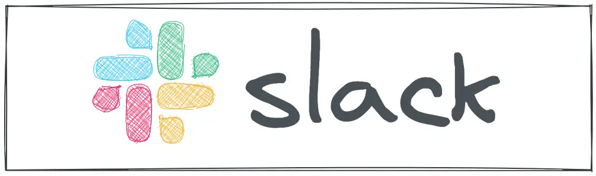
The target audience for this article falls into the following roles:
- Tech workers
- Students
- Engineering managers
The prerequisite to reading this article is fundamental knowledge of system design components. This article does not cover an in-depth guide on individual system design components.
Disclaimer: The system design questions are subjective. This article is written based on the research I have done on the topic and might differ from real-world implementations. Feel free to share your feedback and ask questions in the comments.
You can read the TL;DR on Cheatsheet. The system design of Slack depends on the design of the Real-Time Platform and Real-Time Presence Platform. I highly recommend reading the related articles to improve your system design skills.
Download my system design playbook for free on newsletter signup:
What is Slack?
Slack is a real-time messaging platform used by organizations for communication between team members 1. Slack can be considered a hybrid between E-Mail and Internet Relay Chat (IRC) because of the persistence of the chat messages 2.
At a high level, Slack is organized into workspaces, where a user can interact with oneself. Each workspace can contain multiple Slack channels and every Slack channel could accommodate multiple users. A user is allowed to join multiple workspaces. The user can send chat messages inside the Slack channels. A Slack channel is a group of users interested in a specific topic. The users are also allowed to share media files and search for particular content.
At its inception, Slack customers were from small organizations with a few hundred users. The software architecture of Slack had to evolve significantly to scale for supporting customers from giant organizations. Slack sends billions of messages daily across millions of channels in real-time across the globe. The typical traffic pattern of Slack shows that Slack users are active between 9 hours and 17 hours on weekdays while the peak traffic is between 11 hours and 14 hours 3.
Terminology
The following terminology might be helpful for you:
- Data replication: a technique of storing multiple copies of the same data on different nodes to improve the availability and durability of the system
- Data partitioning: a technique of distributing data across multiple nodes to improve the performance and scalability of the system
- Fault tolerance: the ability of a service to recover from a failure without losing data
- High availability: the ability of a service to remain reachable and not lose data even when a failure has occurred
Questions to ask the Interviewer
You should discuss the system requirements with your interviewer to narrow down the use cases of the system as the time window is limited 4, 5, 6.
Candidate
- Should the chat service support both one-on-one and group chat?
- What is the count of daily active users (DAU) and the read: write ratio?
- What is the anticipated number of concurrent users?
- How many users can you include in a Slack channel?
- How many users can you include in a Slack workspace?
- Should Slack support multiple types of clients?
- Should the chat history be persisted?
- Is the Slack user base globally distributed?
- How many organizations do you expect to use Slack?
- What is the anticipated traffic pattern?
Interviewer
- Yes, the chat service should support both one-on-one and group chat functionality in real-time
- The DAU is 10 million and the read: write ratio is 10: 1
- Approximately 7 million simultaneously connected users
- At most 10,000 users can be included in a Slack channel
- At most 200 thousand users can be included in a Slack workspace
- Yes, there should be support for the mobile device, desktop, and the web client
- Yes, the chat history should be persisted
- Yes, there will be a globally distributed user base with more than half the traffic coming from outside the United States
- You can assume that around 500 thousand organizations will use Slack
- 2 hours per weekday for an active user and 10 hours per weekday for every client connection
Requirements
The system requirements can be summarized as follows.
Functional Requirements
- The user can send real-time messages to another user and within a channel (group messaging)
- The chat messages should be persisted and displayed in chronological order to keep the total order of messages
- The user can send media files such as pictures or short audio files
- The chat service should display the online presence status of the users
- A chat message must be received by a user at most once to preserve message integrity
Non-Functional Requirements
- Low latency
- Highly reliable
- Highly available
Slack API
Slack Application Programming Interface (API) can be classified into web API and real-time API. The web API provides Hypertext Transfer Protocol (HTTP) API endpoints to send messages, execute user login, and perform actions such as creating a new Slack channel 7. The OAuth token can be used for secure user authorization on private Slack channels 8.
The real-time API provides WebSockets for latency-sensitive full duplex communication between the client and the server. The real-time API can be used for typing indicators, chat message delivery, and displaying online presence status 9.
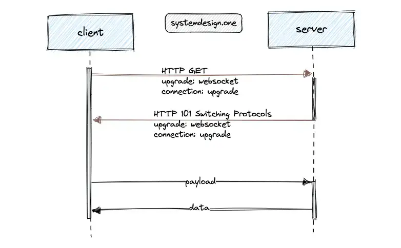
The WebSocket protocol keeps the communication channel open for active users. The client performs a protocol switch request to upgrade the client connection to a WebSocket connection. Slack offers dedicated real-time API endpoints for multiple services such as typing indicators and online presence status for reliability and failure isolation 9. The following are the limitations of the WebSocket protocol 10:
- potential compatibility issues with the existing web infrastructure
- web components such as firewalls and load balancers are built and maintained around HTTP
Although HTTP/2 is not a replacement for push technologies such as WebSocket, combining HTTP/2 with Server-Sent Events (SSE) offers an efficient HTTP-based bidirectional communication channel. HTTP/2 allows multiplexing through the reuse of the same TCP connection for multiple SSE streams and several client requests 10, 2.
How does the client publish a chat message on Slack?
The client executes an HTTP POST request to the web API to send a chat message on Slack 7.
|
|
The server responds with status code 200 OK on success. The server includes the timestamp of the message in the response and the links will be sanitized.
|
|
How does the Slack client fetch the initial screen?
The client performs an HTTP POST request to the web API for login on Slack. The server returns the snapshot of the entire workspace to display the initial screen on the Slack client 5. The snapshot is a keyframe of the team state such as the users, profiles, channels, and membership 2.
The client should perform lazy loading of the workspace by fetching the snapshot partially to improve the latency. The server response should also include the WebSocket URL to the real-time API to establish a WebSocket connection with the client 4, 11.
|
|
How does the Slack client display typing indicators?
The real-time API makes use of the WebSocket channel to display the typing indicators 7.
|
|
API Design Principles
The following API design principles can be used to build a reliable API 12, 8:
- follow the single responsibility principle to build the API and paginate the API response by default
- simplify the API by reducing the number of API parameters and define default parameter values on heavily used API
- provide consistent API endpoints through naming conventions, input parameters, and output responses
- include meaningful error messages in the API response for the ease of troubleshooting
- rate limit the API and design for scale
- avoid breaking changes to the API
The JSON schema validation of the API must be performed through automated tests for increased reliability as the API evolves 8.
Types of Pagination
Slack API must be paginated for scalability. Slack clients should fetch only a limited number of chat messages that fit the viewport of the client while scrolling through the chat history to improve latency and reduce unnecessary bandwidth usage. The different strategies to paginate the API are the following 13:
- offset pagination
- cursor-based pagination
Offset Pagination
The most popular pagination technique is the offset pagination. The client must provide an API request parameter to denote the number of results per page and the page number. The offset pagination performs the following operations at a high-level 13:
- The database is queried to fetch the total count of all the results to determine the total number of pages
- The database is queried with the count and page number parameters provided in the API request to fetch the items for the requested page
The following Structured Query Language (SQL) is executed to fetch the total count of all the results to determine the total number of pages:
|
|
The count and page number parameters in the API request are used to query the items from the database for the requested page. The following SQL will query the database with the API request parameters page number = 3 and count = 20 to return the next 20 items by skipping the initial 40 items:
|
|
The server response contains the following data schema:
|
|
The advantages of using offset pagination are the following 13:
- the user can view the total count of pages and their current progress through the results
- the user can navigate to a particular page
- the implementation of offset pagination is relatively trivial
However, the offset pagination is a suboptimal approach for displaying the chat messages due to the following drawbacks:
- not scalable for large datasets because the database must read upto the offset and count rows from the disk only to discard the offset and return the limit rows
- the page window is unreliable when items are written to the database at a high frequency causing duplicate results or even skipping some results
In conclusion, do not use offset pagination to display the chat history.
Cursor-based Pagination
The cursor-based pagination makes use of an offset (pointer) to a particular item in the dataset. The server returns the result set after the provided pointer in the subsequent API requests. The following operations are executed in cursor-based pagination 13:
- A sequential unique column is chosen for pagination
- The API request will include a parameter known as the cursor parameter to indicate the offset of the results
- The cursor parameter is used by the server to paginate through the result dataset
The client obtains the cursor (pointer) parameter from the server response of the previous API request. I will walk you through an example of the implementation of cursor-based pagination for scrolling through the chat history from the most recent to the oldest chat message. The following SQL will fetch the recent chat messages that will fit the viewport of the client:
|
|
The limit parameter in SQL is set to the count of results to be shown on page + 1. The count of results to be displayed on the page depends on the viewport of the client. The additional record that was queried is not returned in the API response but instead used to identify the value of the next cursor.
The Base64 encoded value of the additional record ID can be returned as the next cursor value to prevent the client from implying the next record and also to enable the server to include supplemental information within the cursor. On top of that, Base64 encoding the cursor provides the flexibility to implement different pagination schemes behind a consistent interface for multiple API endpoints.
The client must provide the value of the cursor in the subsequent API request for pagination 13. The API response from cursor-based pagination will contain the following data schema:
|
|
The following SQL will fetch the recent chat messages before the cursor parameter, which will fit within the viewport of the client:
|
|
The limit parameter in SQL is set to the count of results to be displayed on the page + 1 to determine the next cursor. The cursor is set to empty when the client reaches the last page. The following summarizes the benefits of cursor-based pagination 13:
- scalable for large datasets because the database index is leveraged to prevent a full table scan
- pagination window is not affected when high-frequency writes to the database occur as the next cursor remains the same
There are no solutions, but only tradeoffs. The limitations of cursor-based pagination are the following 13:
- the cursor must be based on a unique and sequential column in the table
- the client will not be able to navigate to a particular page
The verdict is to use the cursor-based pagination for an efficient display of the chat history on Slack.
Further system design learning resources
Download my system design playbook for free on newsletter signup:
Slack Database
Slack is a read-heavy chat service. Put another way, the typical usage pattern is the client reading the chat messages in a Slack channel.
Database Schema
The major entities of the relational data schema for Slack are shown in Figure 2.
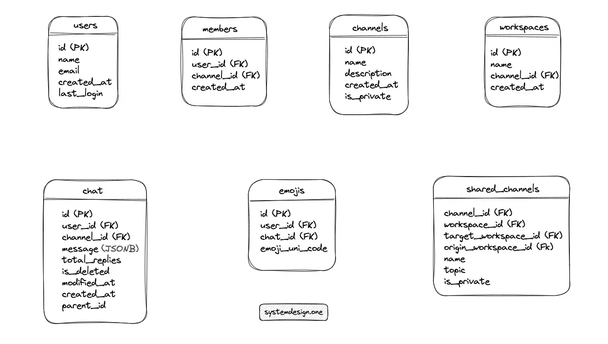
A relational database such as MySQL supports JSON data type columns in the relational table. The chat table can be used to persist the emojis in a JSON data type column instead of generating a dedicated emojis table. The write-behind cache pattern can be enforced to store the emojis with high performance and low latency.
A shared channel is similar to a normal Slack channel but acts as a connecting bridge between multiple organizations. A single copy of the shared channel data should be persisted and the data access requests must be routed to the database shard hosting the channel for scalability and performance. The shared_channels table can be used to bridge the workspaces in a shared channel 14.
Write a SQL query to fetch the recent 20 chat messages
|
|
The database index can be initialized to read the chat messages with low latency at the expense of increased storage and elevated latency on write operations.
Type of Database
The type of database to build the data storage layer for Slack can be decided by inspecting the data types and user traffic patterns. A relational database such as MySQL can be used to build Slack due to the following reasons 4:
- mature technology
- the relational data model is a good discipline
- strong support for tooling
- a large talent pool of experienced engineers is available
The relational database should be configured as an eventually consistent data store to favor high availability over strong consistency.
Back of the Envelope Slack
The frequency of clients reading the chat messages is significantly higher than the frequency of clients writing chat messages on Slack. The calculated numbers are approximations. A few helpful tips on capacity planning during the system design interview are the following:
- 1 million requests/day = 12 requests/second
- round off the numbers for quicker calculations
- write down the units while doing conversions
Traffic
Slack is a read-heavy chat service. The Daily Active Users (DAU) count is 10 million. The number of peak concurrent users is 7 million according to the historical data. You can assume that a user sends 100 chat messages on average each day.
| Description | Value |
|---|---|
| DAU (write) | 1 billion |
| QPS (write) | 12 thousand |
| read: write | 10: 1 |
| QPS (read) | 120 thousand |
Storage
The chat messages can be archived and kept in a cold store to reduce storage costs. Besides, chat messages older than a specific time frame should be removed to reduce storage costs. The storage size of each character on a chat message is assumed to be 1 byte. An average chat message is assumed to consume 100 bytes of storage.
| Description | Calculation | Total |
|---|---|---|
| storage for a day | 12k messages/sec * 100 bytes/message * 86400 sec/day | 100 GB/day |
| storage for 5 years | 100 GB/day * 5 * 300 | 150 TB |
The replication factor of the storage server should be set to at least three for improved durability and disaster recovery.
Bandwidth
Ingress is the network traffic that enters the service when chat messages are being written. Egress is the network traffic that exits the service when chat messages are being read by the users. The network bandwidth is spread out across the globe depending on the location of the users.
| Description | Calculation | Total |
|---|---|---|
| Ingress | 12k message/sec * 100 byte/message | 1.2 MB/sec |
| Egress | 120k message/sec * 100 byte/message | 12 MB/sec |
The majority of the network traffic is caused by transient events such as online presence status changes. The metadata of the user profile and chat messages were intentionally skipped during the capacity planning analysis to keep the calculations simple. The performed calculations should give you a rough idea of the back-of-the-envelope analysis in a system design interview.
Further system design learning resources
Download my system design playbook for free on newsletter signup:
Slack Architecture
Prototyping Slack
Slack can be implemented with a client-server architecture. The chat service identifies the type of event and communicates with the chat database via create, read, update, and delete (CRUD) operations 2. For instance, the media files should be persisted in object storage, and the links to access the media files can be stored in the chat database. In addition, the chat service returns the JavaScript code for the initial render of the Slack client 3, 11.
The gateway server broadcasts the chat messages to the subscribed clients over the WebSocket channel 14, 11. The WebSocket channel handles multiple event types such as chat messages, typing indicators, and user presence status changes.
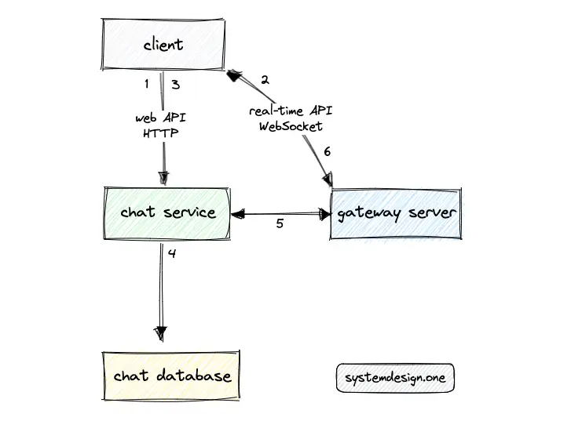
The following operations are executed when the user launches Slack client and publishes a chat message 11, 14, 5, 3, 2, 15:
- The Slack client executes an HTTP POST request to the web API for user authorization
- The server sends a snapshot of the workspace and the WebSocket URL to establish a WebSocket channel
- The client sends a chat message to the chat service over HTTP
- The chat service persists the chat message in the chat database and delegates the chat message to the subscribed gateway servers over HTTP
- The gateway server broadcasts the chat message to the subscribed users over WebSocket
The client will establish a connection to the nearest data center using GeoDNS 3. The snapshot makes the user experience seamless when Slack is initially launched by returning the metadata of subscribed Slack channels and the list of users subscribed to the respective Slack channels 5. However, the snapshot size increases linearly with the increase in the number of users. The snapshot size can easily grow up to a few dozen megabytes for large organizations resulting in a dreadful latency 2, 11, 5.
An additional cache server such as Redis can be provisioned around the chat database for improved read performance. The materialized views of SQL queries can be provided by the cache server to achieve low latency 4. The benefits of the Slack prototype architecture are as follows 5:
- data model offers a rich real-time client experience at the cost of increased memory usage by the client
- trivial implementation model and horizontally scalable
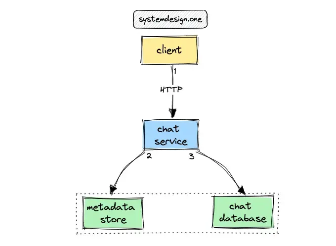
The metadata store is a dedicated database containing details about chat database shards. The chat database is the source of truth for chat messages, comments, emojis, and metadata of Slack channels 16. Every data access operation must query the metadata store to identify the chat database shard before interacting with the respective chat database shard 5. The database can be configured in an active-active replication topology across distinct data centers for improved performance, fault tolerance, and scalability 4, 14. The following are the benefits of active-active database replication topology 16:
- provides high availability through multiple leaders
- high product development velocity with a simple data shard model
- easiness in debugging the customer database
- easy to scale out by adding more database shards
The limitations of the active-active database replication topology are the following 16:
- scaling limitations on a single host
- inflexible data model
- hot spots and underutilization of shards due to the difficulty in re-sharding
- degraded service availability due to dependency on the database shard and difficulty to configure replicas
- increased operational complexity
The sharding logic should be implemented on the chat service with the current architecture 16. A channel in Slack is an abstract keyword whose identifier (ID) is assigned to an entity such as a user, team, or a regular Slack channel 3. The chat database should be partitioned with channel_id as the shard key for scalability and reduced hot spots. A naive approach to partitioning the database is to perform an arbitrary sharding with support for manual re-sharding and automatic re-sharding on the occurrence of a hot spot 4.
When the leader instance of the metadata store crashes, an automated failover can be performed to the remaining available leader instance for high availability 5. When both leader instances of the metadata store fail simultaneously, the users can continue to use Slack by querying the cache server, but with limited functionality 4. The database nodes can be addressed in a configuration file for service discovery and must be manually replaced for improved availability 5.
The Command and Query Responsibility Segregation (CQRS) pattern can be implemented by routing the read requests to the follower database instances and routing the write requests to the leader database instance. The CQRS pattern offers high performance and high availability at the cost of stale reads. The read your writes semantics can be implemented on top of CQRS to achieve strong consistency 4.
The current architecture is a functional prototype of Slack. However, the current architecture will not satisfy the scalability requirements of Slack.
Building the Minimum Viable Product for Slack
The requirements for building Slack demand an implementation of atomic broadcast in distributed systems. The following criteria should be satisfied to implement atomic broadcast:
- validity: all users will eventually receive the message published by a user in a Slack channel
- integrity: a published chat message is received by each user not more than once
- total order: all users receive the chat messages in the identical order
The atomic broadcast in distributed systems is equivalent to consensus 17 and distributed system consensus in general is impossible 18. The key to building Slack is relaxing some constraints to satisfy the system requirements 2. The constraint that should be dropped is an end-to-end property 19 of the system and depends on the requirements and usage patterns 2.
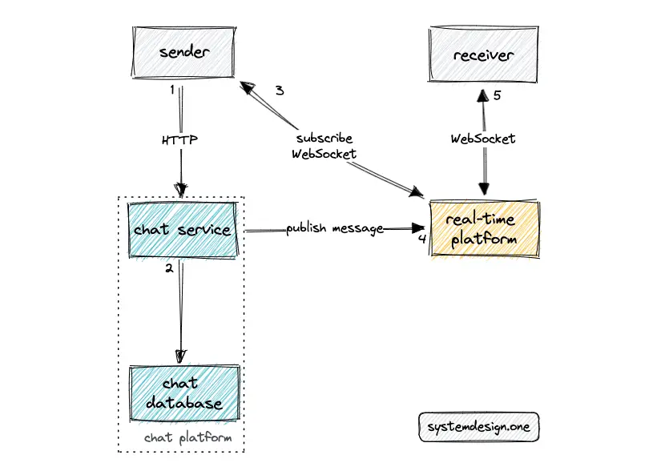
The real-time platform is one of the crucial components to build Slack. Both the sender and the receiver (clients) should maintain a WebSocket connection to the real-time platform 20. The real-time WebSocket connection can be used to broadcast chat message updates and initiate API calls to fetch the channel chat history 5.
The chat messages should be persisted in the chat database before broadcasting to the users for improved durability and fault tolerance. The relational database must be configured to prioritize availability over consistency and support an automatic leader promotion on failure. The relational database produces a statement-based log on every write operation for improved fault tolerance 4.
The active-active database replication topology comes with a limitation of the possibility of conflicts. The conflicts can either be resolved automatically through application logic or manually through the operator action. The sharding by channel_id as the shard key reduces the probability of conflicts as teams cannot overlap 4.
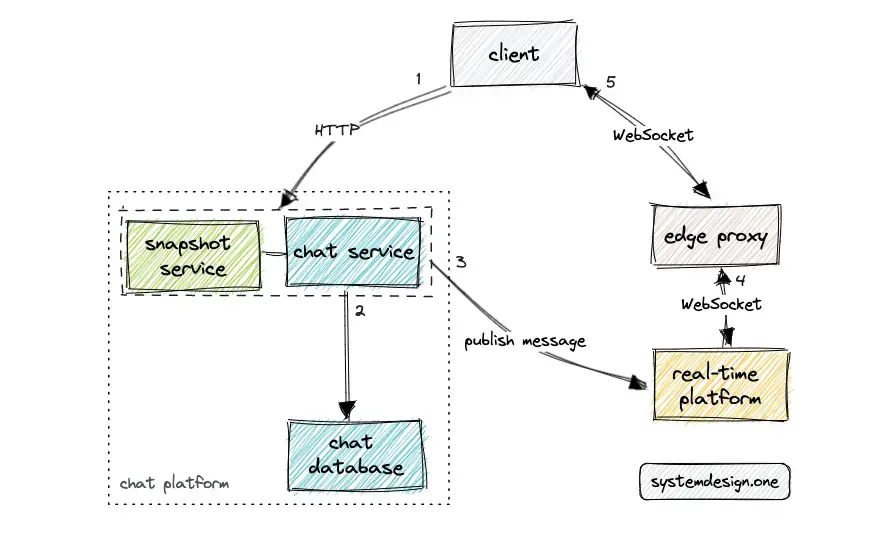
The gateway server is a component of the real-time platform 20. The gateway server is a stateful and in-memory service that maintains the mapping between the channel_id and client connections 5, 3. The gateway server also stores some amount of chat history temporarily.
An edge proxy such as Envoy can be introduced between the gateway server and the client for SSL termination and proxying the WebSocket connections 5, 9. The edge proxy delegates the client requests to the gateway server. Consistent hashing can be used as the load-balancing algorithm to map the channels to the gateway server 3.
Hot restarts can be enabled on the edge proxy for scalability, reduced operational complexity, and high availability. Hot restarts prevent dropping any client connections when dynamic changes to the cluster and endpoints occur. The advantages of an edge proxy are the following 9:
- enable passive health checking through outlier detection
- provides panic routing to handle traffic spikes
The snapshot service is an application-level edge query engine backed by a cache server and stores the bootstrap payload for Slack client 5, 4, 14, 11. The snapshot service will return a slimmed-down version of the bootstrap payload for reduced latency and high performance 15. The snapshot service offers HTTP API endpoints to the client for fetching data 15.
The client can query the snapshot service directly to identify the list of users in a particular Slack channel or to fetch the metadata of a particular user 11. On top of that, the snapshot service supports the autocomplete queries on Slack quick-switcher 15.
The snapshot service is an application-aware microservice to reduce the server load 2. The snapshot service can utilize the adaptive replacement cache (ARC) cache eviction policy on the internal cache for high performance. The snapshot service supports lazy loading of the bootstrap payload when the Slack client is launched for improved latency. The snapshot service comes with the challenge of cache coherency and reconciling business logic.
The client is not allowed to update the snapshot service. The gateway server and chat service can update the snapshot service when new events are received. The in-memory snapshot service should be able to handle approximately 1 million queries per second according to the historical data and load test results from Slack 5, 11, 15.
The snapshot service generates a response to client requests by querying the internal cache. The snapshot for a particular team can be kept up-to-date as long as there is at least one user from the specific team connected to Slack. The snapshot service flushes the cache only when the last user of the specific team disconnects from Slack. The snapshot service should be prewarmed by leveraging the publish-subscribe technique offered by the real-time platform to improve the user experience (latency) of the first user from the specific team.
The snapshot service should store a data object only once in the internal cache and keep references to the particular data object to save memory 11. The snapshot service can subscribe to the relevant Slack channels on the real-time platform and keep the internal cache updated without duplicates.
The snapshot service provides just-in-time annotation by predicting the data objects that the client might query next and pushing the predicted data objects to the clients proactively in the same response to reduce latency by preventing unnecessary network round trips 11. For example, the snapshot service will send the metadata object of an inactive user along with the chat message that mentioned the inactive user because the metadata of the inactive user might not be cached by other users 15.
The circuit breaker pattern can be implemented for improved fault tolerance of the snapshot service. The snapshot service must reject the incoming traffic when the upstream services indicate an increasing failure rate.
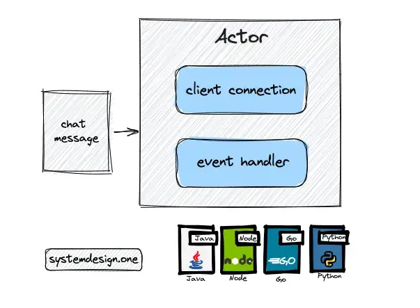
The actor programming model is used to implement the gateway server for improved performance and high throughput. An actor is an extremely lightweight object that can receive chat messages and execute actions to handle the messages using an event handler. A thread will be assigned to an actor when a chat message should be processed. The thread is released once the message is processed and the thread is subsequently assigned to the next actor. Further explanation of the actor model implementation of the gateway server is included in the real-time platform article.
The client (mobile device) is allowed to send a chat message such as replying to a Slack notification without establishing a WebSocket connection. The client can make an HTTP request to the chat service for improved performance and low bandwidth 2.
The client should salt the received chat messages to prevent displaying the same message twice. The salt is a random unique token that should be stored with every chat message. The server should not perform deduplication of the chat messages because it is likely that the sender might publish the same chat message twice 2.
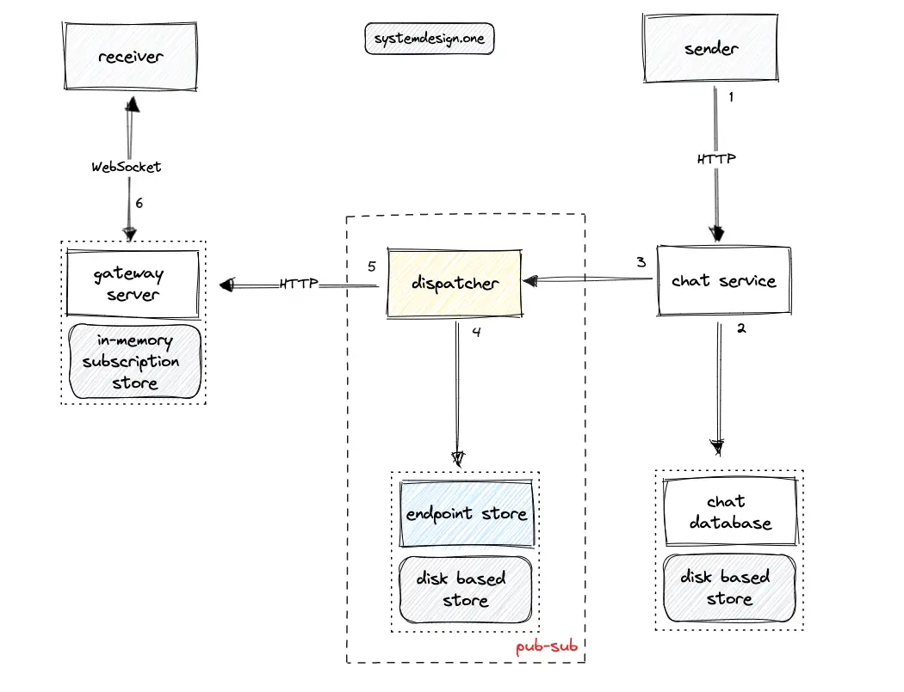
A further optimization is to push updates only to the active channels and users in the client’s viewport for improved performance and reduced bandwidth usage 11. The clients can subscribe to the events relevant to the current viewport and change subscriptions whenever the user switches to another screen for improved performance 15.
The publish-subscribe (pub-sub) pattern to broadcast events can be built by leveraging the dispatcher service and the endpoint store of the real-time platform. A message broker such as Apache Kafka is not used to build the pub-sub server for reducing operational complexity.
The gateway server subscribes to the endpoint store with all the active channels based on consistent hashing asynchronously 3. The snapshot service should also subscribe to the relevant channels to receive updates 5. The dispatcher queries the endpoint store to identify the list of subscribed gateway servers and snapshot service instances for a particular Slack channel 20.
The subscription workflow of the gateway server and endpoint store in Slack is similar to the subscription workflow in the real-time platform 20. You can read the related article to explore the subscription workflow in more detail.
Scaling Slack
Load balancers must be provisioned between different components of Slack to improve the performance and availability of the system. Object storage such as Amazon Web Services Simple Storage Service (AWS S3) can be used to store the media files that are shared in a Slack channel. The content delivery network (CDN) should be used to cache frequently accessed media assets to achieve low latency.
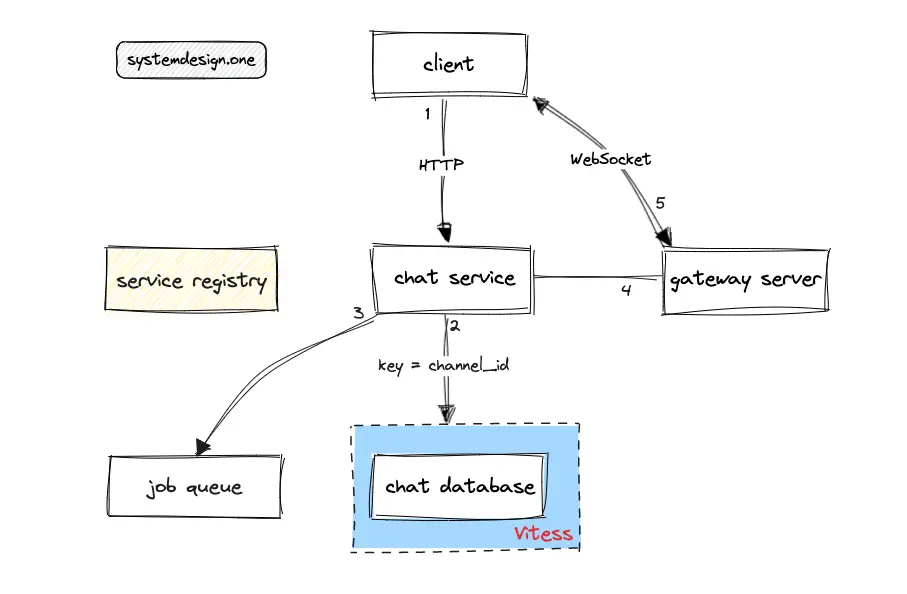
The service registry such as the consul enables service discovery through self-registration of services and automated cluster repair 5, 3, 4. The topology management is automated through the usage of a service registry. The service registry must be queried to identify the service instances available in the system 3.
The job queue is used to defer non-critical tasks such as indexing chat messages to provide chat search functionality 2, 14. The job queue can be provisioned using Redis streams or Apache Kafka 11, 4. The job workers will asynchronously poll the tasks from the job queue 4.
The chat messages are persisted in the chat database before being sent to the users over WebSocket 16. The data storage layer of Slack must be highly available, reliable, and scalable to fulfill the system requirements.
The database shards will exhaust and require frequent re-partitioning in gigantic organizations. Vitess can be used for partitioning the chat database. Vitess offers a shard topology management service on top of MySQL database for easier horizontal scaling. Vitess allows application code and database queries to remain oblivious to the data distribution among multiple database shards by encapsulation of shard routing logic. Vitess makes it trivial to re-partition a database shard or merge shards according to the evolving system requirements 5.
The database can be partitioned with channel_id as the shard key to reduce the occurrence of hot spots. The sharding by channel_id spreads out the load but introduces the need for the scatter-gather pattern for teams in an organization. The teams are relatively less isolated with the channel_id key partitioning approach, so there must be additional performance protective measures implemented against noisy neighbors in the database shards.
The client should be tolerant to partial failures and retry on scatter-gather for improved high availability 5. The scatter-gather pattern can be used with Vitess for multiple shards to reduce hot spots. Vitess replaces the leader-leader database replication topology with a single leader and an orchestrator to execute the automated failover. The following are the benefits of using Vitess to shard the chat database 5, 16:
- flexible sharding through per-table sharding policy
- mature topology management through database self-registration
- supports a single leader with semi-synchronous replication
- reduced operational complexity through an automated failover with the orchestrator
- automatic re-sharding for cluster expansion
- keeps MySQL at the core of development and operations
- offers scalability through built-in sharding features
- provides an extensible open-source project
The search database such as Apache Solr should also be partitioned based on channel_id as the shard key for scalability 4.
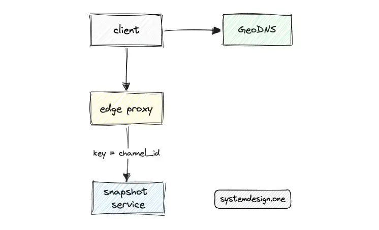
The snapshot service must be deployed across multiple edge data centers for scalability and low latency. Team affinity on the snapshot service can be implemented at a data center level by routing all the users in a specific team to the same snapshot service instance. Team affinity is enforced to achieve optimal cache efficiency 15.
Alternatively, the scatter-gather pattern can be used to improve the cache efficiency of the snapshot service at the cost of elevated latency 11.
An edge proxy can be provisioned in front of the snapshot service to load balance the traffic among snapshot service instances using consistent hashing using channel_id as the key 3. Put another way, consistent hashing is used to identify the snapshot service instance for a particular Slack channel 5.
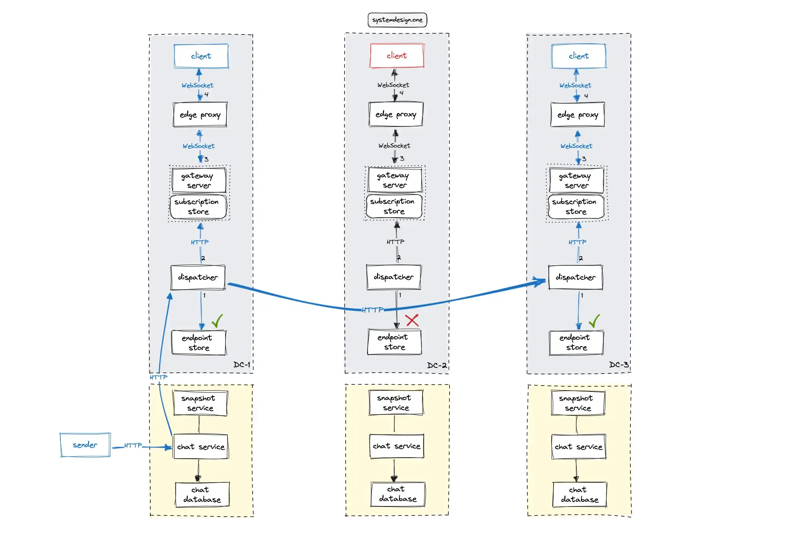
The users of an organization typically do not change their physical location quite often. A dedicated endpoint store could be used to persist the data center ID of each client connection and channel subscription. The published chat messages should be published only to the set of data centers that are in the subscriber list to reduce bandwidth usage.
The cross-data center subscription model can be used to implement Slack to reduce unnecessary bandwidth usage, unlike the broadcast model in the implementation of the real-time platform 20. Alternatively, the Conflict-free Replicated Data Type (CRDT) database can be used to implement cross-data center subscriptions without executing a cross-data center request at the expense of degraded latency. The endpoint store will contain the following data model 20:
The following operations are performed by Slack to publish a chat message across multiple data centers 20, 3:
- The client makes an HTTP request to the web API of the chat service to publish the message
- The chat service persists the message in the chat database and delegates the message to the dispatcher service
- The chat service updates the snapshot service
- The dispatcher queries the local endpoint store to identify the data centers of the subscribed clients
- The dispatcher broadcasts the chat message only to the set of subscribed peer data centers over the HTTP
- The dispatcher in the peer data center queries the local endpoint store to identify the list of subscribed gateway servers
- The gateway server queries the local in-memory subscription store to identify the list of subscribed clients and fans out the chat message over WebSocket
Further system design learning resources
Download my system design playbook for free on newsletter signup:
Slack Architecture Deep Dive
The microservice architecture can be used for service decomposition and scalability. The service mesh is used for service discovery as the system scales out 5.
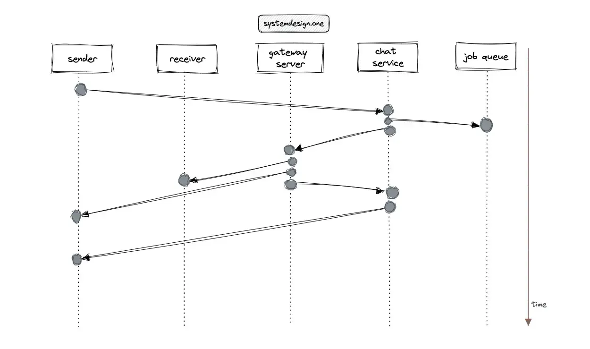
The clients can publish chat messages without establishing a WebSocket connection at the cost of an additional network hop between the clients. The latency of the system can be reduced by deferring the expensive computations using the job queue 2, 4. The unread notifications and user reactions in Slack can be implemented using a distributed counter at the expense of increased operational complexity.
The push notifications in Slack can be enabled through third-party service integrations. The push notification allows notifying an inactive user, for example, when the inactive user is mentioned in a chat message. Some of the extremely popular push notification services are the Apple push notification service and Firebase cloud messaging. The bloom filter data structure can be employed to prevent the duplication of notifications to the same user in a space-efficient approach 21.
The client can store the timestamp of the last read message to identify the offset of messages to be retrieved. However, this approach will highly likely result in an erratic user experience due to the usage of multiple devices by the same user. As an alternative, the client can use the user’s last seen timestamp stored in the server to fetch the newer chat messages 22.
Presence Status
The events such as a user reaction to a message, bookmarking, or a member joining a channel follow a similar workflow as publishing a chat message. The transient events such as typing indicators and presence status changes can be sent through the WebSocket channel instead of communicating with the chat service 3.
The majority of the events occurring on Slack are user presence status change 4, 6. The publish-subscribe technique can be used for an efficient implementation of the user presence status 11. The Slack client should display the presence status only for the subset of users that are currently visible on the viewport of the client for improved performance 3. The real-time presence platform article describes in detail the implementation of the user presence status feature 23.
Message Ordering
The server timestamp can be used as the chat message ID to order the messages in chronological order. However, the message ordering with the server timestamp will yield inaccurate results in a distributed system due to the occurrence of the clock skew and network delays. On the other hand, the client timestamp cannot be used due to the possibility of an incorrect time set and difficulty in synchronizing time across clients.
An alternative approach is to use a unique sequence number generator such as Twitter Snowflake for ordering the chat messages. However, this approach also suffers from the clock skew problem in a distributed system and will not result in accurate message ordering.
The precise timestamp of the messages is not crucial but only the causality of the messages is important for proper message ordering. As a result, the optimal approach is to use a logical clock such as the Lamport clock or a Vector clock for message ordering. The logical clock is a mechanism for capturing chronological and causal relationships within a distributed system. The key concept is to annotate every chat message request with an incremented count of the previous chat message response received by the client.
Low Latency
The client persists the timestamp of the last synchronization with the snapshot service to enable incremental updates of the snapshot 2, 11. The service workers in the web client can be used to fetch only the incremental updates from the snapshot service 22. The session objects can be loaded asynchronously in parallel by the client to maintain low latency. The hashcode of the media file URLs should be shared with the clients for reduced bandwidth 11.
The mobile clients should load only a single Slack channel and load other channels in the background to accomplish low latency. The JSON events can be replaced with Thrift events for ease of maintenance and improved performance 11. The snapshot size can be further reduced by removing some of the data fields from the initial payload.
The cache server can hold the unread messages and their count for rapid retrieval. The mobile client should poll the API endpoint to keep the sidebar updated 24.
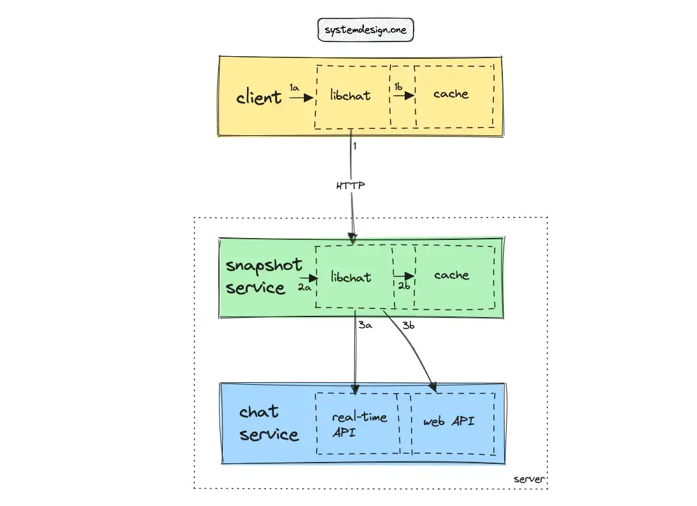
An edge cache be used to reduce the network round trip to improve the latency. The libchat is an internal service used by different components to query their local cache.
The network round-trip time on the desktop and mobile clients can be reduced by querying the local cache in the client via the libchat service. The libchat service and local cache can run as distinct processes on the desktop client for improved performance 7.
The users of the web client often have stable, and high bandwidth internet connections like the office internet or wired ethernet. The libslack service cannot be initialized on a web client due to the difficulty in injecting native code on the web browser. Therefore, the web client can execute requests to the snapshot service provisioned on the edge data centers 7.
The communication between the components of Slack occurs through the libchat service. This method provides an opportunity to experiment with different network protocols and wire formats with changes to a single codebase 7.
High Availability
An organization reconnecting to the Slack network after an outage could cause a thundering herd 4. There should be multiple countermeasures in place to tackle the thundering herd problem. The in-memory snapshot service can reduce the server load and offers a straightforward approach to mitigate the thundering herd problem 2, 15.
Jitter must be added to client connection request time intervals to spread out the load and reduce the thundering herd problem. The partitioning of stateful services of Slack with channel_id as the shard key can also prevent a thundering herd 5.
An active-active load balancer should be provisioned to handle traffic spikes for high availability. Rate limiting should be configured on the services and API endpoints to attain high availability and fault tolerance. The requests can be dropped when a particular service instance reaches its threshold for memory, concurrent connections, or throughput 11, 4. The rate limiter will also alleviate the thundering herd problem 4.
The load testing frameworks such as locust can be used for identifying the service limits to prevent cascading failures and improve fault tolerance 11. There should be cluster orchestration configured to self-heal for high availability 5.
The hot spots on the system can be handled by alerting and provisioning high-end hardware for critical services 4. A dedicated monitoring service should be provisioned to check the health status of the critical services and replace the unhealthy services quickly 3.
Fault Tolerance
A draining mechanism should be implemented to route the users to a working data center when the data center fails for improved fault tolerance and high availability 3. A dead letter queue can be provisioned to log the errors while writing to the chat database.
The gateway server maintains an in-memory queue of uncommitted sends for transient events. The events should be replayed when a gateway server fails. The gateway server should automatically retry when the chat service is unavailable for improved fault tolerance 2. The depth of the in-memory queue must be monitored for asserting the system’s health 4.
Scalability
The developer’s productivity can be increased by provisioning a remote development environment 25. The infrastructure can leverage services offered by the hyperscalers such as AWS for rapid growth and scalability. The resources can be provisioned and disaster recovery scenarios can be practiced with ease on the hyperscaler infrastructure 26.
Client Support
The desktop Slack client can be built with ElectronJS for cross-platform support. The web client can be created with any modern JavaScript framework such as ReactJS 22. The mobile client can be built with either React Native or native mobile technologies.
Security
Security issues must be proactively detected through static code analysis. Static code analysis is a tool that inspects the code for security vulnerabilities and insecure programming practices without code execution. The static code analysis is based on a list of security rules. Some of the popular static code analysis tools are checkmarx and semgrep 27.
Summary
The key takeaway from building Slack is that optimality is contingent and should be adapted with growth. It is crucial to identify the end-to-end part of the problem to build a distributed system 2.
What to learn next?
Download my system design playbook for free on newsletter signup:
License
CC BY-NC-ND 4.0: This license allows reusers to copy and distribute the content in this article in any medium or format in unadapted form only, for noncommercial purposes, and only so long as attribution is given to the creator. The original article must be backlinked.
References
-
What is Slack?, slack.com ↩︎
-
Keith Adams, Scaling Slack (2020), gotoams.nl ↩︎
-
Sameera Thangudu, Real-time Messaging (2023), slack.engineering ↩︎
-
Keith Adams, How Slack Works (2016), infoq.com ↩︎
-
Mike Demmer, Scaling Slack - The Good, the Unexpected, and the Road Ahead (2018), infoq.com ↩︎
-
Julia Grace, Scaling Infrastructure Engineering at Slack (2019), infoq.com ↩︎
-
Keith Adams, Mike Fleming, Haim Grosman, Making Slack Feel Like Slack (2017), slack.engineering ↩︎
-
Brenda Jin, Evolving the Slack API (2018), slack.engineering ↩︎
-
Ariane van der Steldt, Radha Kumari, Migrating Millions of Concurrent Websockets to Envoy (2021), slack.engineering ↩︎
-
Allan Denis, Will WebSocket survive HTTP/2? (2016), infoq.com ↩︎
-
Bing Wei, Scaling Slack (2018), infoq.com ↩︎
-
Saurabh Sahni, Taylor Singletary, How We Design Our APIs at Slack (2022), slack.engineering ↩︎
-
Michael Hahn, Evolving API Pagination at Slack (2018), slack.engineering ↩︎
-
Yingyu Sun, Mike Demmer, How Slack Built Shared Channels (2020), slack.engineering ↩︎
-
Bing Wei, Flannel: An Application-Level Edge Cache to Make Slack Scale (2018), slack.engineering ↩︎
-
Guido Iaquinti et al., Scaling Datastores at Slack with Vitess (2021), slack.engineering ↩︎
-
Tushar Deepak Chandra et al., Unreliable failure detectors for reliable distributed systems (1996), dl.acm.org ↩︎
-
Michael J. Fischer et al., Impossibility of Distributed Consensus with One Faulty Process (1985), groups.csail.mit.edu ↩︎
-
J.H. Saltzer et al., End-to-End Arguments in System Design, web.mit.edu ↩︎
-
Neo Kim, Live Comment System Design (2023), systemdesign.one ↩︎
-
Suresh Kondamudi, How To Remove Duplicates In A Large Dataset Reducing Memory Requirements By 99% (2016), highscalability.com ↩︎
-
Slack Frontend Architecture with Anuj Nair (2020), softwareengineeringdaily.com ↩︎
-
Neo Kim, Real-Time Presence Platform System Design (2023), systemdesign.one ↩︎
-
Johnny Rodgers et al., Reducing Slack’s memory footprint (2017), slack.engineering ↩︎
-
Sylvestor George, Remote Development at Slack (2022), slack.engineering ↩︎
-
Slack Case Study (2015), aws.amazon.com ↩︎
-
How Two Interns Are Helping Secure Millions of Lines of Code (2022), slack.engineering ↩︎